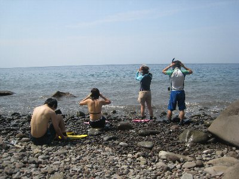
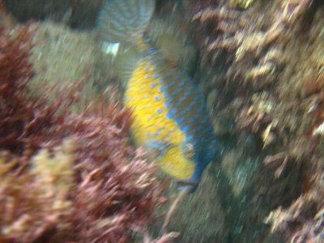

井田でシュノーケル | 2008年9月 幹事：きっかー |
|---|---|
| 今年の夏は海に行ってないな〜って思っていたら、きっかーからシュノーケルやろう！と声が掛かった。 そんなわけで、メンバーを募り伊豆の井田でシュノーケルをすることにしました。 実行日は台風が沖縄の方にいるせいか、ちょっと曇り空で波も荒れてる？風に見えました。それでも、井田の海はダイバーで一杯！ 結構人気スポットなんだね。シュノーケルやっている人は少ないな〜 岩ばかりの海岸にタープをたてて、いざ海へ！ あっと、今回のメンバーは6名です。 | |
 さあ、出発するぞ！その前に日焼け止めを・・・ |  井田の海は結構大きな石がゴロゴロしてます。 |
| 海の中は、波が立っているため視界は余り良くないけど、ソライロスズメダイが沢山居ます。まあ、伊豆の海では定番ですよね。 ちょっと深い（と言っても５ｍ程度）所まで潜ろうと頑張ったけど、耳抜きがきつく断念。結構痛いのね。小さい魚は痛くないのか？そもそも魚に耳ってあるのかな〜 みんなで黙々とシュノーケルを楽しみ、お腹がすいたので近くの食堂でお昼にしました。から揚げ定食を食べたけど、ボリュームもあって美味しかったな〜〜 午後もシュノーケル。 ちょっと先の岩場辺りに、沢山魚がいたよって情報なので行ってみる。なんか、午前よりも波が荒れてきたような気がするが・・・ 透明度は午前より悪いが、岩場のほうが確かに魚の種類が多い！ 結構いるよ。しかし、岩場のためか台風の影響か、浮かんでいると波に遊ばれるぅ〜〜〜〜(＠_＠;) 水中の岩影にフグみたいの発見〜〜〜！ 写真撮ろうとしても逃げられる〜〜 お腹が黄色いフグもどきだな〜 | |
|  見事にブレブレ！誰かこの魚知りません？ |  ソライロスズメダイは沢山います！ |
| やっぱ、波に遊ばれていると写真のピントが上手く合わない。水中でも魚と一緒に流される感じです。 何だかんだで、知らぬ間に時間がたっていたようで、すでにいい時間。体も疲れてきたし帰りましょうー♪ 駿河湾の中だけど、以外に遊べたし良しとしましょう。来年は、もっと天気がいい時に来ましょうか。それとも下田辺りまで行きますか。 | |
| 写真＆コメント ｂｙ べっしー | |